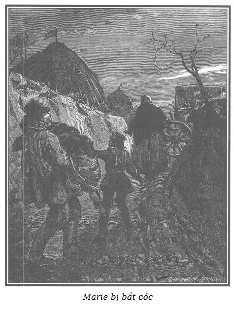

CON ĐƯỜNG TRŨNG
Mặt trời lặn ở chân trời, cánh đồng vắng vẻ và im ắng. Marie đi đến gần con đường trũng mà cô phải đi qua để đến nhà cha xứ thì thấy một thằng bé thọt mặc áo blouse xám và đội một chiếc casquette xanh từ trong thung đi ra.
Nó khóc sướt mướt và từ xa nhìn thấy Marie, nó chạy lại phía cô gái.
- Ôi, thưa cô, xin cô hãy rủ lòng thương cháu. - Vừa nói nó vừa chắp hai tay năn nỉ.
- Cháu muốn gì? Có chuyện gì vậy cháu? - Marie hỏi và tỏ vẻ quan tâm.
- Than ôi! Cô quý hóa của cháu! Tội nghiệp cho bà cháu già nua, quá già nua, bà cháu đã ngã ở đằng kia khi xuống dốc rãnh, bà cháu đau lắm… Cháu lo bà cháu bị gãy chân, cháu yếu quá không thể đỡ bà cháu dậy được… Lạy Chúa! Làm thế nào được nếu cô không giúp cháu? Tội nghiệp, bà cháu đến chết mất thôi.
Marie cảm động trước sự đau khổ của thằng bé thọt.
- Cô cũng không khỏe lắm đâu, cháu ạ. Nhưng cô có thể giúp cháu cứu bà cháu. Chúng ta hãy mau đến cứu bà… Cô ở trong trang trại kia, nếu bà ấy không thể đến đây được với cháu, cô sẽ cho người tìm.
- Ôi, cô quý hóa của cháu! Chúa nhân lành sẽ ban phúc cho cô, chắc chắn như thế. Chính ở chỗ này… cách hai bước chân thôi, trên con đường trũng như cháu đã nói với cô… khi xuống bờ rãnh thì bà cháu bị ngã.
- Cháu không phải là người vùng này hả? - Marie vừa hỏi vừa đi theo thằng Tập Tễnh.
- Thưa không! Cháu và bà cháu từ Écouen đến.
- Thế cháu và bà cháu đi đâu?
- Đến nhà vị cha xứ trên đồi kia kìa… - Thằng con lão Cánh Tay Đỏ nói để gây thêm lòng tin cho Marie.
- Có phải đến chỗ cha xứ Laporte không?
- Thưa vâng, đến nhà cha xứ Laporte. Bà cháu rất quen biết cha, rất quen biết ạ!
- Cô cũng đến đó đấy, một cuộc gặp gỡ thú vị! - Marie vừa nói vừa tiến về phía con đường trũng.
- Bà ơi! Cháu đây, cháu đây… Hãy bình tĩnh, cháu đã đưa người đến cứu bà đây! - Thằng Tập Tễnh nói to để ngầm báo trước cho lão Thầy Đồ và mụ Vọ biết để chuẩn bị sẵn sàng bắt nạn nhân.
- Bà cháu ngã có gần đây không? - Marie hỏi.
- Không ạ! Thưa cô quý hóa của cháu, bà cháu ngã sau cái cây to kia kìa, chỗ đường ngoặt, cách đây hai mươi bước chân.
Bỗng nhiên thằng Tập Tễnh dừng lại.
Có tiếng vó ngựa vang lên trong sự im ắng của cánh đồng, thằng Tập Tễnh tự nhủ: Lại hỏng việc nữa rồi!
Con đường ngoặt hẳn một góc ở nơi mà thằng Tập Tễnh và Marie đang đứng.
Một người cưỡi ngựa xuất hiện ngay chỗ ngoặt, khi đến gần cô gái thì người đó dừng lại.
Người ta lại nghe thấy tiếng vó ngựa của một con ngựa khác và chỉ một lúc sau đã xuất hiện người đầy tớ mặc áo redingote xám, khuy bạc, quần ngắn bằng da trắng và đôi giày ống. Chiếc thắt lưng da màu vàng hung nịt chặt áo choàng của anh ta.
Ông chủ mặc đơn giản, một áo redingote dày màu đồng và một quần xám nhạt, cưỡi một con ngựa nòi màu hồng, đẹp kỳ lạ, với một tư thế duyên dáng cực kỳ…
Mặc dù vừa phải qua một chặng đường dài, vẻ hào nhoáng của chiếc áo loáng ánh vàng vẫn không hề bị xỉn màu vì hơi ẩm.
Con ngựa của người hầu cách ngựa ông chủ vài bước cũng thuộc loại ngựa nòi, có hạng.
Thằng Tập Tễnh đã nhận ra người cưỡi ngựa có nước da màu nâu và duyên dáng, đó là ngài Tử tước de Saint-Remy mà người ta ngờ là người tình của bà Công tước de Lucenay.
- Cô gái xinh xắn của tôi, - ngài Tử tước nói với Marie mà sắc đẹp của cô đã làm anh ta chú ý - cô có thể làm ơn chỉ đường đến làng Arnouville giúp tôi không?
Marie không ngước mắt lên trước cái nhìn chằm chằm và lấc cấc của người trai trẻ đó, trả lời:
- Ra khỏi con đường trũng này, ngài sẽ đi theo con đường mòn thứ nhất, phía tay phải, con đường đó sẽ dẫn đến một con đường trồng anh đào đưa thẳng tới Arnouville.
- Cảm ơn cô, cô bé xinh đẹp của tôi. Cô đã chỉ tôi rõ ràng hơn cái bà già tôi vừa gặp cách đây hai bước đang nằm dài dưới gốc cây. Tôi không biết được gì hơn từ bà ta, ngoài những tiếng rên.
- Bà tội nghiệp của cháu đấy! - Thằng Tập Tễnh nói thầm ảo não.
- Bây giờ chỉ hỏi thêm một điều nữa thôi nhé! - Ngài de Saint-Remy hỏi Marie. - Tôi có thể dễ dàng tìm thấy ở Arnouville trang trại của ông Dubreuil không?
Marie không khỏi rùng mình khi nghe thấy cái tên đó, nó gợi lại cho cô cảnh tượng nặng nề sáng nay. Cô trả lời:
- Những tòa nhà của trang trại ở ngay trên con đường ngài đi đến Arnouville đấy, thưa ngài.
- Một lần nữa, xin cảm ơn cô gái xinh đẹp. - Ngài de Saint-Remy nói và anh ta cho ngựa phi nước kiệu, người hầu ruổi ngựa theo sau.
Nét mặt duyên dáng của ngài Tử tước có phần vui vẻ hơn khi nói với Marie. Khi chỉ còn lại một mình thì nét mặt lại trở nên âu sầu và căng thẳng bởi một nỗi lo ngại sâu sắc.
Marie nhớ lại cái con người chưa ai biết mà người ta đang khẩn trương chuẩn bị một căn phòng để đón tiếp ở trang trại Arnouville theo lệnh bà de Lucenay, không ngờ lại là người kỵ sĩ trẻ đẹp này.
Tiếng vó ngựa gõ trên nền đất cứng chắc vì đóng băng yếu dần và mất hẳn, mọi vật trở nên yên tĩnh.
Thằng Tập Tễnh thở phào nhẹ nhõm.
Để trấn an và báo cho đồng bọn mà một trong hai đứa, tên Thầy Đồ, đã lẩn tránh được những người cưỡi ngựa, thằng con lão Cánh Tay Đỏ kêu lên:
- Bà ơi! Cháu đây… Cháu đi với một cô tốt bụng đến cứu bà đây…
- Nhanh lên! Nhanh lên, cháu ơi! Cái ông cưỡi ngựa làm ta chậm mất ít phút. - Marie vừa nói vừa bước nhanh chân để chóng tới chỗ ngoặt của con đường trũng.
Marie vừa tới nơi, mụ Vọ từ chỗ mai phục nói nhỏ:
- Để nó cho tôi, đại ca!
Nói rồi mụ nhảy tới Marie, một tay tóm cổ cô gái, còn tay kia bịt mồm trong lúc thằng Tập Tễnh nhảy ngay đến chân cô gái, kẹp lấy hai chân không cho cô đi nổi một bước.
Mọi chuyện xảy ra nhanh chóng đến nỗi mụ Vọ không kịp nhận biết nét mặt của Marie, nhưng trong khoảnh khắc ngắn ngủi khi lão Thầy Đồ chui ra khỏi hố nấp và quờ quạng với chiếc áo khoác, mụ Vọ cũng nhận ra nạn nhân cũ của mình.
- Con Lỏi Con! - Mụ sửng sốt kêu lên và nói thêm với niềm vui man rợ. - Lại là mày à? A, chính là quỷ sứ đã đưa mày đến… Đó là số phận của mày, luôn luôn phải rơi vào móng vuốt của tao, tao sẵn có axit trong xe ngựa rồi… Chuyến này cái bộ mặt non choẹt xinh đẹp này sẽ được nếm đủ… Vì mày đã làm cho tao phát sốt với bộ mặt trinh bạch của mày… Này ông già, đến lượt lão. Hãy coi chừng kẻo nó lại cắn cho đấy, giữ cho chắc trong khi chờ chúng tôi quấn nó lại!
Lão Thầy Đồ túm lấy Marie bằng đôi tay khỏe và trước lúc cô kịp kêu lên, mụ Vọ đã chụp chiếc áo khoác qua đầu và quấn chặt lấy cô.
Chỉ trong chốc lát, Marie đã bị bó chặt, bị nhét giẻ vào miệng, không còn có thể cử động hoặc kêu cứu được nữa.
- Bây giờ phần lão cái bó này, đại ca ạ! - Mụ Vọ nói. - Này, này, này! Không nặng hơn cái túi bọc lụa đen ở con kênh Saint-Martin đâu, phải không, lão già?
Tên cướp rùng mình khi nghe những lời đó, lão nhớ lại giấc mơ khủng khiếp đêm trước. Mụ Vọ nói tiếp:
- À, ra thế! Có chuyện gì thế đại ca? Cứ như là người run lập cập ấy! Từ sáng đến giờ đôi lúc răng lão lại va vào nhau như đang lên cơn sốt, và sao lão cứ nhìn lên trời như đang tìm kiếm cái gì vậy?
- Quân chúa lười! Lão ấy nhìn con ruồi bay đây! - Thằng Tập Tễnh nói.
- Nhanh lên, chuồn thôi, lão già của tao. Vác giùm con Lỏi Con. Hay quá! - Mụ Vọ vừa nói vừa nhìn lão Thầy Đồ bế Marie trên tay như bế một đứa trẻ con đang ngủ. - Nhanh ra xe, nhanh lên!
- Nhưng ai dẫn tao đi đây? - Thầy Đồ vừa nói vừa ôm chặt món hàng nhẹ và mềm oặt trong đôi cánh tay lực sĩ.
- Con nòng nọc già? Lão nghĩ đến đủ mọi chuyện! - Mụ Vọ nói và nới rộng chiếc khăn quàng, mụ cởi nốt chiếc foulard đỏ quàng trên cái cổ gầy còm, xoắn một nửa chiếc khăn theo chiều dài rồi nói với Thầy Đồ.
- Há họng ra, cắn lấy đầu chiếc foulard đỏ này trong mồm, cắn thật chặt! Thằng Tập Tễnh nắm đầu kia và lão cứ việc theo nó. Mù tịt thì chó khôn! Lại đây, nhóc!

.Thằng bé thọt nhảy cẫng bắt chước một cách thô kệch tiếng ẳng ẳng của con chó, một tay nắm đầu chiếc khăn và dắt lão Thầy Đồ đi theo trong lúc mụ Vọ chạy vội đi trước báo cho Cá Trê.
Marie cảm thấy choáng váng và không thể chống cự được tí nào.
Vài phút sau cô bị đưa lên chiếc xe ngựa do Cá Trê điều khiển. Mặc dù trời đã tối, các cửa sổ đều bị che kín cẩn thận và ba tên đồng phạm cùng với nạn nhân gần ngoắc ngoải đi thẳng tới cánh đồng Saint-Denis, nơi Tom đang chờ chúng.